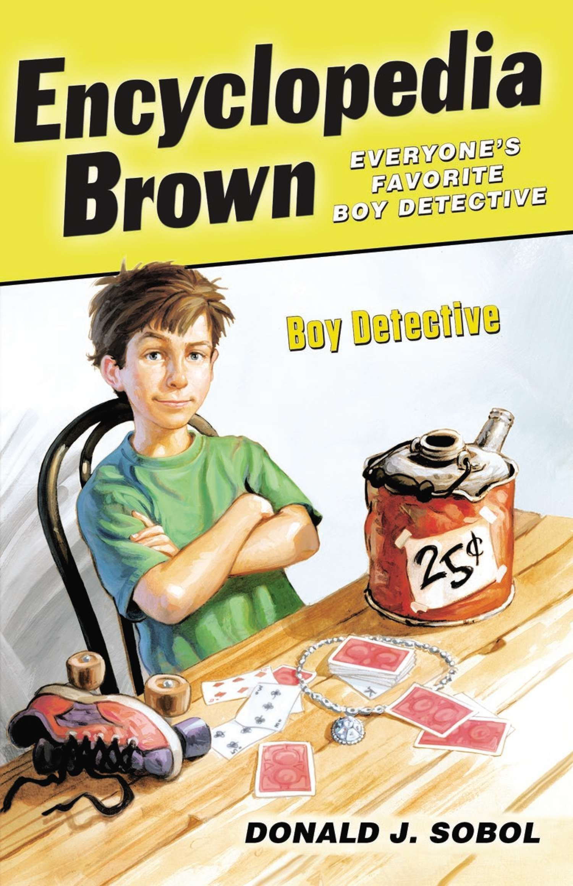

Stay up-to-date on the second grade news!
In reading, we are beginning our last unit in second grade! Can you believe it? In our Mystery Book Club unit, students are drawing on everything they know about fiction to help them solve mysteries within a book club. Students will study how mysteries fit together in a series by comparing and contrasting the actions of characters, plot, and setting. Students will also be able to identify a central message or lesson from a mystery that he/she can apply in their own life. We love this unit and know the students will, too!
Mentor Text: Encyclopedia Brown - Image Source: https://www.amazon.com/Encyclopedia-Brown-Detective-Donald-Sobol/dp/0142408883
This week we have started our final writing unit called, "Writing Gripping Fictional Stories". Students will use all that they have already learned about good narrative writing. However, in this unit, we will extend what we have learned and try strategies to build tension in our stories; students will learn, that often a character wants something, but encounters some sort of trouble along the way. The goal is to write well elaborated short stories that keep the reader at the edge of their seats!
In math, we will measure the length of an object by selecting and using appropriate tools such as rulers, yardsticks, meter sticks, and measuring tapes. Students will use addition and subtraction within 100 to solve word problems involving length and determine how much longer one object is than another.
Everything around us is made up of matter. Matter is anything that has mass and takes up space. In Science, students have been studying the specific physical properties used to classify material and to determine its usefulness as a building material or for any other purpose. Matter can serve different purposes based on its physical properties.